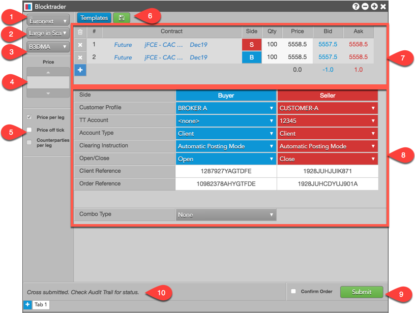
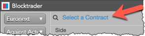
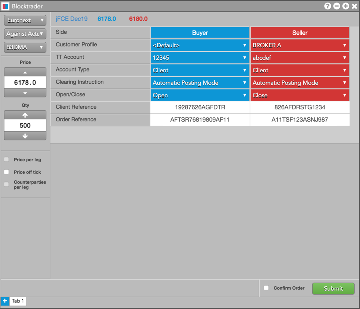
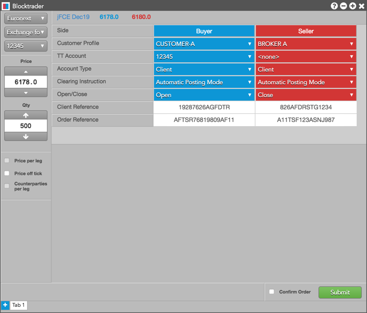
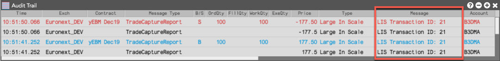
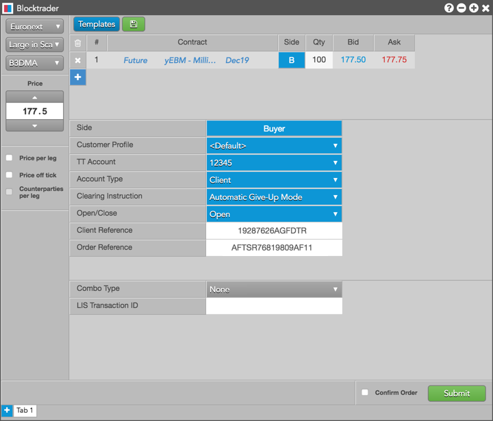
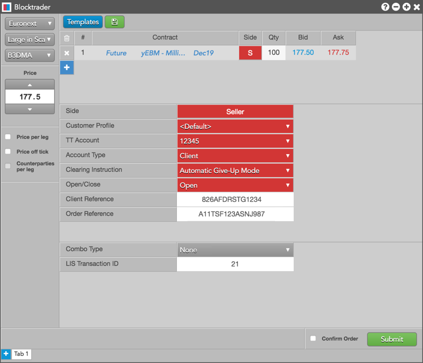
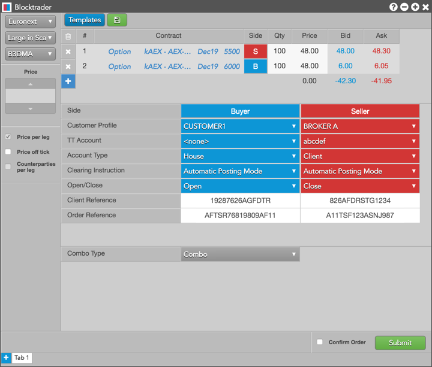
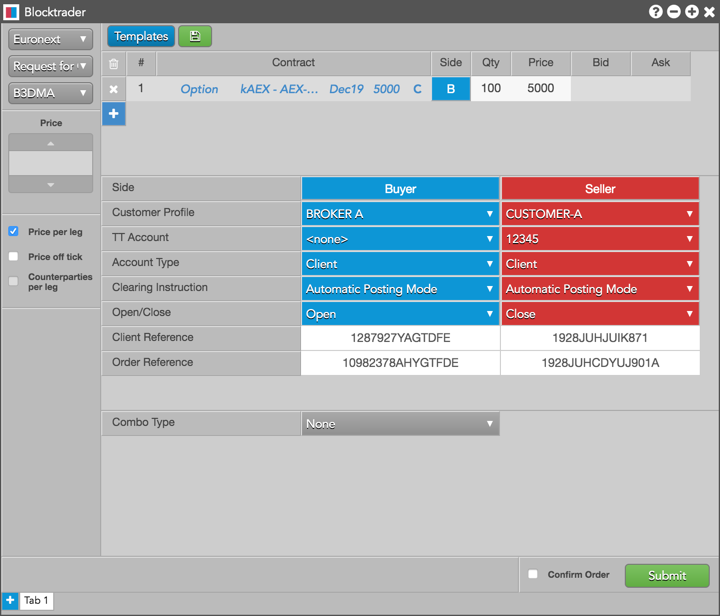

On the Optiq platform, all wholesale trades supported by Euronext are managed via a single interface. Reporting of Against Actuals, Exchange for Swaps, and Large in Scale trades are combined into a single technical facility.
On TT, you can submit wholesale trades for all Euronext instruments and markets, as well as submit orders for Large in Scale trades using a single Blocktrader widget. Trades can be entered as a single-side trade, dual-side trade, or multi-leg transaction.
When submitting wholesale trades on Euronext via Optiq OEG, consider the following:
The following Euronext Optiq Wholesale trades are supported on TT:
Blocktrader consists of the components needed for submitting wholesale trades on Euronext.

The image shows the following:
The following list shows the fields that are common when submitting wholesale trades on Euronext.
The selected value is forwarded to the exchange API in the ClearingInstructions field.
For multileg wholesale trades on Euronext, Blocktrader submits the quantity and price of each leg of the trade instead of just submitting the spread price.
The legs of the strategy have to be submitted separately in Blocktrader. You can select a template for an exchange-defined strategy to seed the legs or enter a user-defined strategy.
Note: Strategies must be submitted in the sequence required by Euronext and must always be created from the Buy perspective.
To submit a Wholesale Trade on Euronext:
Use the Explorer at the top of the widget to find an instrument for Against Actual or Exchange for Swap/Option trades.

For Large in Scale and Request for Cross trades, use the instrument picker in the leg definition grid.
For Large in Scale and Request for Cross transactions, use the leg definition grid and instrument picker to select an instrument and set an order quantity.
Note: For multi-leg strategies, you are required by the exchange to set a price and quantity for each leg.
These fields are common for all supported Euronext wholesale trades unless otherwise noted.
Additional fields in Blocktrader vary depending on the type of wholesale trade you select:
If Confirm order is checked, confirm the order before submitting it to the exchange.
Request for Cross trades: Upon receiving the order, the exchange broadcasts a request to cross message that appears in the Audit Trail. After the exchange-defined time period (e.g., 10 seconds), the order is submitted.
Note: Against Actual trades can be submitted only for futures contracts on Euronext.
To submit Against Actual trades, you must first complete the fields listed in Common Wholesale Trade Fields for Euronext for both sides of the trade.
The following figure shows Against Actual trades in Blocktrader.

To submit an Exchange For Swap/Option trade, you must first complete the fields listed in Common Wholesale Trade Fields for Euronext for both sides of the trade.
The following figure shows an EFS trade in Blocktrader.

To submit Large in Scale - 1 Sided trades, you must first complete the fields listed in Common Wholesale Trade Fields for Euronext.
In addition, you must populate the following additional fields:
Note: When accepting an LIS trade as a Reactor, ensure that you submit your side of the transaction using the same Combo Type.
As an Initiator of an Large in Scale - 1 Sided, leave the LIS Transaction ID field blank in Blocktrader. The exchange will provide you with the ID after you submit the trade.
Note: After submitting a Large-in-Scale - 1 sided trade as an Initiator, record the LIS Transaction ID provided by the exchange in the Message column in the Audit Trail widget on TT and send this value to the counterparty.

If submitting a single LIS trade to multiple counterparties, manually split the trade into separate Large in Scale - 1 Sided transactions, and ensure that each counterparty receives their respective LIS Transaction ID after you submit each trade.
As the Reactor (counterparty), submit the opposite side of the trade by entering the LIS Transaction ID provided by the Initiator.
The following figure shows additional fields for a Large in Scale - 1 Sided trade (Buy side).

The following figure shows additional fields for a Large in Scale - 1 Sided trade (Sell side).

To submit Large in Scale trades, complete the fields listed in Common Wholesale Trade Fields for Euronext.
In addition, populate the following field:
Combo Type: Select a strategy type or set the type to "none". If submitting a Large in Scale trade for an exchange supported strategy, set the type of multi-leg transaction being submitted.
The following figure shows a Large in Scale 2 - sided trade in Blocktrader.

An RFC provides an alternative to submitting an RFQ for both the member who initiates the RFC and the crossing member. Both the Buy and Sell side of the RFC must be entered in the Blocktrader widget.
Per exchange rules, an RFC can only be submitted for strategies created at the exchange. If the strategy is not yet available, it must be created first prior to submitting the RFC.
Note: RFCs can be submitted in all options products and supported strategies except currency pairs.
To submit Request For Cross trades, complete the fields listed in Common Wholesale Trade Fields for Euronext.
The following figure shows a Request For Cross trade in Blocktrader.
